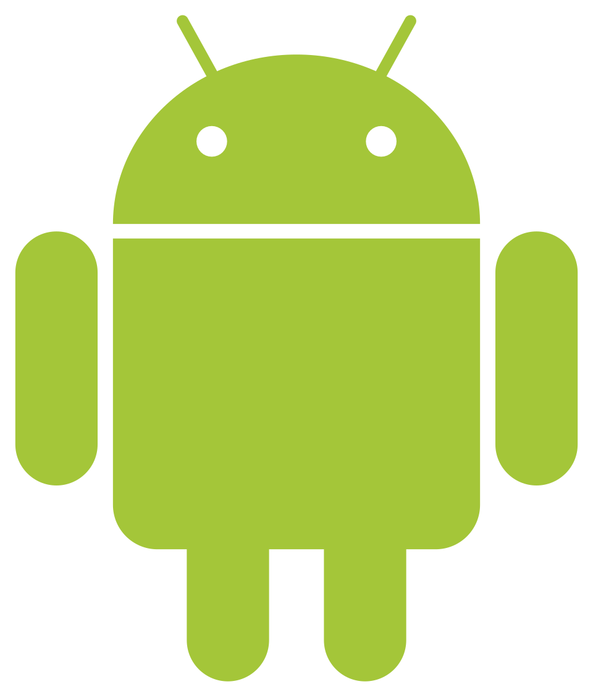
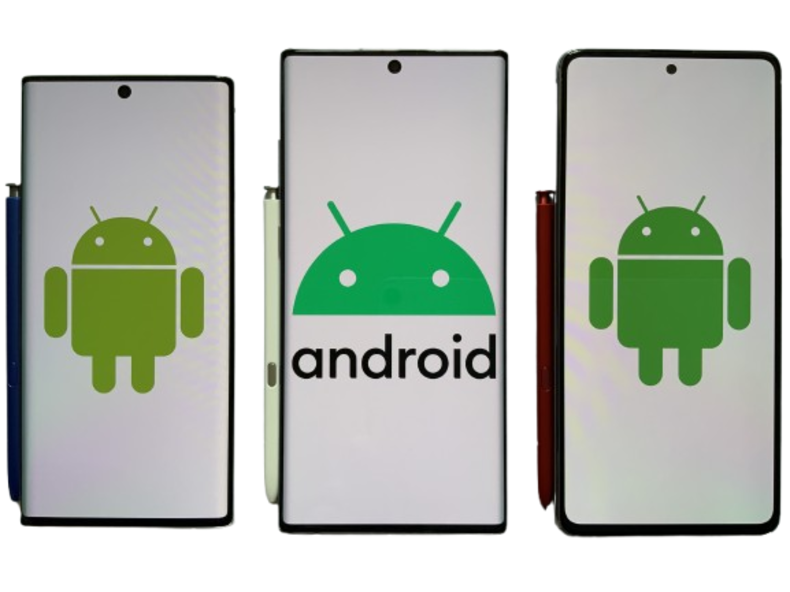
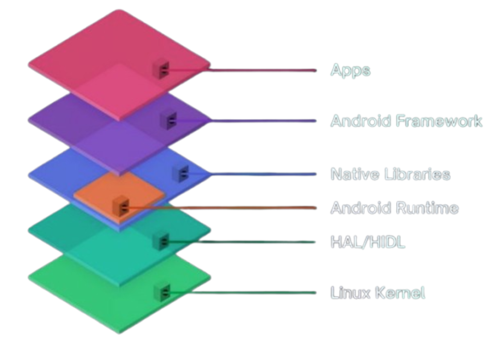

WHAT IS
Android?

Overview & History
Android is a mobile operating system that works on phones, tablets, TVs, automobiles, smart watches, and other smart devices. It was originally formed at Android Inc., founded by Andy Rubin, Rich Miner, Nick Sears, and Chris White in 2003. The aim initially was to create a more sophisticated OS for digital cameras, after which the attention became focused on making an open mobile OS platform.
Google purchased Android Inc. in the year 2005. The public launch of Android was done in 2007, through working with the Open Handset Alliance, in order to develop an open source alternative to the existing mobile platforms. The Android OS is based on the Linux kernel, and most development takes place in the Android Open Source Project (AOSP).
Advantages and trade-offs:
-
Advantages: Works with most hardware, is open source, and isheavily customizable.
-
Trade-offs: Device updates vary by manufacturer, and is hard to test with the copious amounts of hardware.


Architecture
The Android system uses a customized Linux kernel that is both monolithic yet modular. Key components including process management, virtual memory, networking, and filesystems run within the kernel space, whereas loadable modules and modifications specific to manufacturers are used for customization of the kernel to support mobile hardware. Linux provides functionality for virtual memory management, paging, memory mapping, and isolation of processes.
Hardware-specific functionality is isolated from the Android framework through the use of the Hardware Abstraction Layer (HAL). The HAL modules expose an interface for hardware components such as cameras, audio, graphics, sensors, and Bluetooth; this allows for the Android framework code to function on a variety of chipsets. The kernel drivers do the task of communicating with hardware, and the vendor HAL modules interpret the requests made by Android and perform device-specific tasks. The Binder IPC is the major inter-process communication facility in Android used to connect applications, system services, HAL services, and protected processes.
Android apps run in user space and are isolated to separate application processes. Modern apps are executed on the Android Runtime (ART) platform that replaces Dalvik with an ahead-of-time and/or just-in-time compilation of app bytecode before being executed on the device. The orchestrator, the Zygote process, preloads common classes and libraries and subsequently forks into application processes. The native interfaces comprising the Android framework APIs, the NDK, and POSIX/Linux system calls provide access to services and hardware. The system UI and launcher provided by Android offer windowing and task management capabilities in place of a desktop window manager.